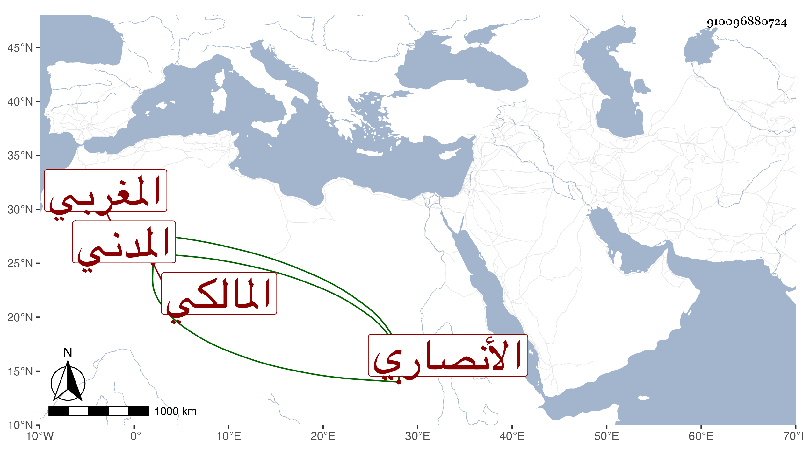

0902Sakhawi.DawLamic.ITO20230111-ara1.EIS1600.910096880724
Biography ID: 910096880724
481
حسن بن محمد بن الزين عبد العزيز بن عبد الواحد بن عمر بن عياد الأنصاري المغربي الأصل المدني المالكي أخو حسين الآتي . ابن عم البدر حسن ابن عمر الماضي قريبا ويعرف كأخيه بابن كمال حفظ الرسالة وسمع على الجمال الكازروني في سنة أربع وثلاثين . ومات ...
